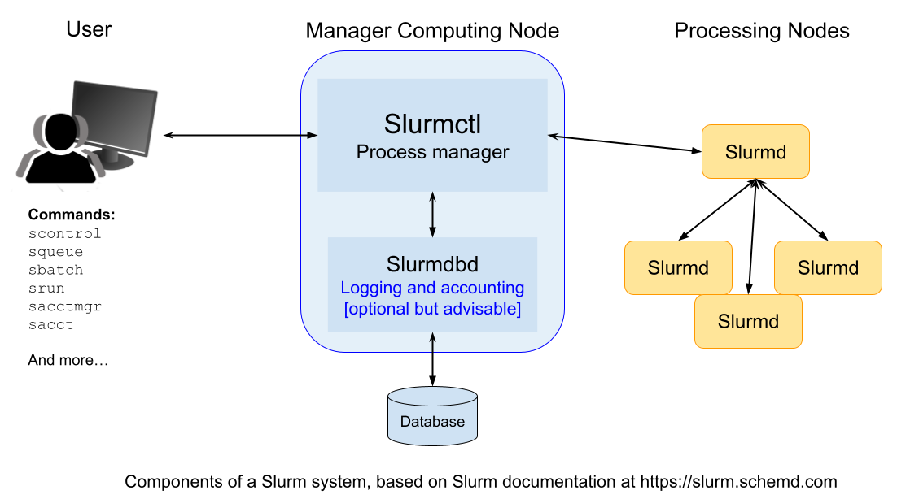

Introduction to Slurm workload manager
Overview
Teaching: 50 min
Exercises: 0 minQuestions
What is Slurm?
How do I run computing tasks using Slurm?
Objectives
Understand the role and purpose of Slurm
Understand how to create and run a computing task using Slurm
Intro
Slurm is an open source, fault-tolerant, and highly scalable cluster management and job scheduling system for large and small Linux clusters. Slurm requires no kernel modifications for its operation and is relatively self-contained. As a cluster workload manager, Slurm has three key functions. First, it allocates exclusive and/or non-exclusive access to resources (compute nodes) to users for some duration of time so they can perform work. Second, it provides a framework for starting, executing, and monitoring work (normally a parallel job) on the set of allocated nodes. Finally, it arbitrates contention for resources by managing a queue of pending work.
MPI (Message Passing Interface)
In order to execute a set of software instructions simultaneously on multiple computing
nodes in parallel, we need to have a way of sending those instructions to the nodes.
There are standard libraries available for this purpose that use a standardized syntax and
are designed for use on parallel computing architectures like Bura. This is known as a
Message Passing Interface or MPI.
We will go into this topic in more detail later on, but for now it suffices to know that there are different “flavors” of MPI available, and how you use each one depends on which type of MPI you are using.
There are three fundamentally different modes of operation used by these various MPI implementations. Here is how they interact with the Slurm system:
- Slurm directly launches the tasks and performs initialization of communications through the PMI2 or PMIx APIs. (Supported by most modern MPI implementations.)
- Slurm creates a resource allocation for the job and then mpirun launches tasks using Slurm’s infrastructure (older versions of OpenMPI).
- Slurm creates a resource allocation for the job and then mpirun launches tasks using some mechanism other than Slurm, such as SSH or RSH. These tasks are initiated outside of Slurm’s monitoring or control.
Architecture
Slurm is a system used to manage and organize work on a cluster — a group of computers working together to perform complex tasks.
At the core of Slurm is a central manager, called slurmctld, which keeps track of available resources (like CPUs and memory) and assigns jobs to the appropriate computers. There can also be a backup manager that takes over if the main one fails.

Each computer in the cluster (called a node) runs a program called slurmd. This acts like a remote assistant: it waits for tasks, runs them, sends back results, and then waits for more.
To keep a record of all activity, an optional component called slurmdbd can be used. It stores accounting information — such as who used what resources and when — in a shared database.
Another optional component, slurmrestd, allows users and applications to communicate with Slurm over the web using a REST API.
Users can interact with Slurm from the terminal commandline using several simple commands.
Here are some of the most important ones:
-
srun: starts a job, -
scancel: cancels a running or queued job, -
sinfo: shows the current status of the system, -
squeue: displays information about jobs currently running or waiting, -
sacct: provides detailed reports on finished jobs.
There’s also a graphical interface called sview that visually shows system and job status, including how the nodes are connected.
Administrators can use tools like:
-
scontrol: to monitor or modify how the system is working, -
sacctmgr: to manage users, projects, and resource allocations.
Finally, for developers, Slurm also offers APIs that allow software to interact with the system automatically.
Slurm Commands
Let’s see some of these commands in action. For reference you can find more details about these commands and their options in the SLURM Quick Start Summary (PDF). From the commandline you can also type:
$ man <name of command>
to get more information on all Slurm daemons, commands, and API functions.
The command option –help also provides a brief summary of options. Note that the command options are all case sensitive.
1. View Available Resources
Before we begin a computing task, it is helpful to review what computing resources are
available. The sinfo command reports the state of partitions and nodes managed by Slurm.
# Display the status of partitions (queues) and nodes
sinfo
Expected Output:
PARTITION AVAIL TIMELIMIT NODES STATE NODELIST
debug up infinite 2 idle node[01-02]
batch up infinite 4 idle node[03-06]
2. Submit a Job Script
Now let’s send a computing task to the Slurm for execution on Bura.
First, create a script file named job.sh. This script provides the Slurm controller with all the information needed to execute the task, including any input data, what commands to execute and where to store any output. The script also controls the number of instances of the job to be run in parallel.
#!/bin/bash
#SBATCH --job-name=test_job # Name of the job
#SBATCH --output=output.txt # Save output to this file
#SBATCH --time=00:01:00 # Set max execution time (HH:MM:SS)
#SBATCH --ntasks=1 # Number of tasks to run
hostname # Command to execute
We can then submit this job to the Slurm system. Slurm provides a number of ways of doing this.
srun is used to submit a job (an instance of a task) for execution.
$ srun <program>
This command has a wide variety of options to specify resource requirements, which can be configured using optional flags appended to the srun command. Here are a few example of useful flags - see the SLURM Quick Start Summary for a more comprehensive list.
To begin a job at a specific time, e.g. 18:00:00
srun --begin=18:00:00 <program>
To require that a specific number of CPUs be allocated to the task:
srun --cpus-per-task=<Ncpus> <program>
To control the number of instances of the task to be executed:
srun -n<Ntasks> <program>
To assign a maximum time limit after which the job instance should be halted (measured in wall-clock time):
srun --time=<time> <program>
It’s often more convenient to design a job script which can be parallelized over multiple
processes if desired, and submit it for later execution. The sbatch command exists
for this purpose:
sbatch job.sh
Submitted batch job 1234
3. Check the Queue
Having submitted a job, it is very helpful to be able to monitor the status of it. We can do
that using the squeue command - this will show us the status of both running and pending jobs.
squeue
Expected Output:
JOBID PARTITION NAME USER ST TIME NODES NODELIST(REASON)
1234 batch test_job alice R 0:01 1 node03
4. Cancel a Job
But what do we do if we realise there is a problem with our job after we have submitted it?
We can use the scancel command to cancel a job process. To do so we first need the
jobid assigned to the job once it was submitted. You can find this number from the output
of the squeue command.
E.g., to cancel the job with ID 1234:
scancel 1234
Expected Output:
# No output if successful
5. View Job History
Another useful option is to review a listing of all previous jobs submitted, including those that have been completed (and therefore no longer appear in the output of squeue).
# Show accounting info about completed jobs
sacct
Expected Output:
JobID JobName Partition State ExitCode
------------ ---------- ---------- -------- ---------
1234 test_job batch COMPLETED 0:0
Deep Dive: sbatch – Submit Jobs to SLURM
Let’s take a closer look at the sbatch command used to submit batch job scripts to
the SLURM job scheduler.
A batch job is a script that specifies what commands to run, what resources to
request, and other scheduling options. When submitted with sbatch, SLURM queues the
job and runs it on an available compute node.
Basic Syntax
sbatch [options] your_job_script.sh
#!/bin/bash
#SBATCH --job-name=my_job # Name of the job
#SBATCH --output=out.txt # File to write standard output
#SBATCH --error=err.txt # File to write standard error
#SBATCH --time=00:10:00 # Time limit (HH:MM:SS)
#SBATCH --ntasks=1 # Number of tasks
#SBATCH --mem=1G # Memory per node
#SBATCH --partition=short # Partition to submit to
echo "Running on $(hostname)"
sleep 30
| Option | Description |
|---|---|
--job-name=NAME |
Sets the name of the job |
--output=FILE |
Redirects stdout to FILE |
--error=FILE |
Redirects stderr to FILE |
--time=HH:MM:SS |
Sets the time limit for the job |
--ntasks=N |
Number of tasks to run (usually 1 per core unless MPI is used) |
--cpus-per-task=N |
Number of CPU cores per task |
--mem=AMOUNT |
Memory per node (e.g., 4G, 2000M) |
--partition=NAME |
Specifies which partition (queue) to submit to |
--mail-type=ALL |
Sends emails on job start, end, failure, etc. |
--mail-user=EMAIL |
Email address to send notifications to |
--dependency=afterok:ID |
Runs this job only if job with ID completed successfully (afterok) |
Useful Environment Variables
Inside your script, you can use these special variables:
| Variable | Description |
|---|---|
$SLURM_JOB_ID |
The ID of the job |
$SLURM_JOB_NAME |
The name of the job |
$SLURM_SUBMIT_DIR |
The directory from which the job was submitted |
$SLURM_ARRAY_TASK_ID |
The task ID in an array job |
$SLURM_NTASKS |
Total number of tasks requested |
Inline Submission (Without Script)
You can submit commands directly without creating a file:
sbatch --wrap="hostname && sleep 60"
Array Jobs in SLURM
Sometimes you need to run the same job multiple times with slight variations — for example, processing 10 different input files or running a simulation with different parameters.
Instead of writing 10 separate job scripts or submitting the same script 10 times manually, you can use a job array.
SLURM will treat each element in the array as a separate job, but with shared configuration.
Each job will have a unique task ID accessible with the variable $SLURM_ARRAY_TASK_ID.
Example: Simple Job Array
Create a job script named array_job.sh:
#!/bin/bash
#SBATCH --job-name=array_test # Name of the job
#SBATCH --array=1-10 # Define array range: 10 jobs with IDs from 1 to 10
#SBATCH --output=logs/job_%A_%a.out # Output file pattern: %A = job ID, %a = array task ID
echo "This is array task $SLURM_ARRAY_TASK_ID"
What this does:
-
This script will be launched 10 times (one per task).
-
Each task gets a different value of $SLURM_ARRAY_TASK_ID (1 to 10).
-
Each task will write its output to a different file, e.g.:
-
logs/job_1234_1.out
-
logs/job_1234_2.out
-
…
-
logs/job_1234_10.out
-
Monitor Progress
To see the job’s status:
squeue --job 5678
Check Output
Once the job finishes, view the results:
cat out.txt
cat err.txt
Exercise
Create your own Slurm script to run 4 instances of a Python script in parallel, outputting the results to a set of text files.
Solution
Use nano to create a Python script file to be run in parallel (saved to my_python_script.py), e.g.
# Simple example of a python script to be # run as a Slurm job # Do some calculation... result = 100 * 1000 # Output the results to stout. # This will be captured by the job script and stored print(result)Next, create a shell script file (saved to my_job_script.sh) to control the batch process:
#!/bin/bash #SBATCH --job-name=my_parallel_job #SBATCH --array=1-4 #SBATCH --output=logs/output_%A_%a.out python3 my_python_script.pyThe use sbatch to submit the job:
$ sbatch my_job_script.sh
Key Points
Slurm is a system for managing computing clusters and scheduling computing jobs
Slurm provides a set of commands which can configure, submit and control jobs on the cluster from the commandline
Jobs can be parallelized using scripts which provide the configuration and commands to be run